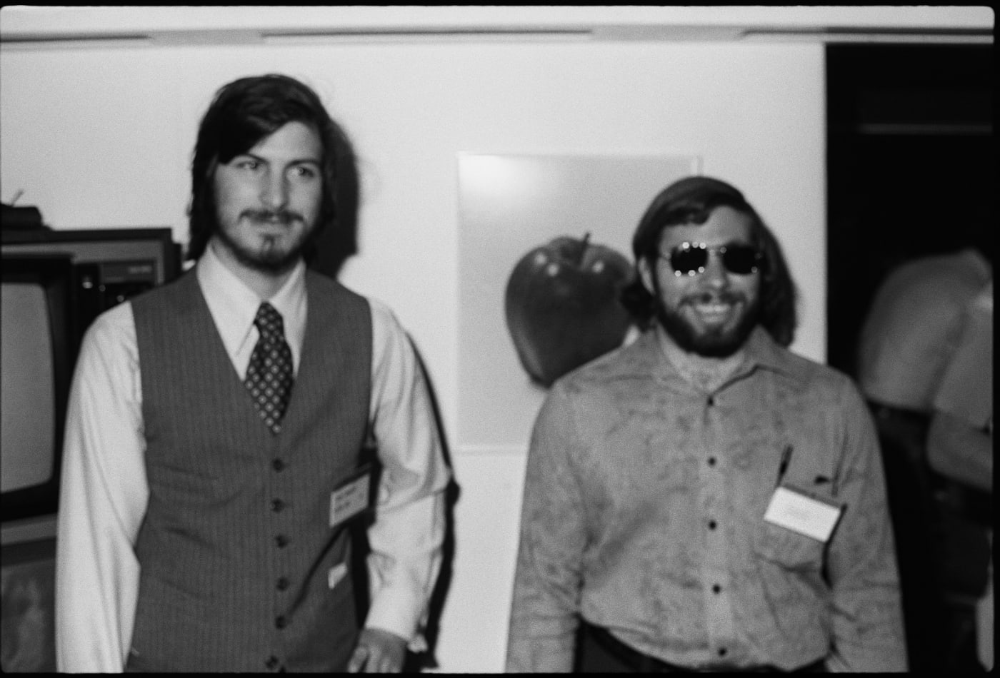

Chris Young
This is the "portfolio" site for Chris Young. It is designed in Bootstrap and is designed to fit on only one page. Check out the other stuff I did in the class below as well as some things about me.
Projects
Below is a list of the assignments I completed in the class.
- Assignment 01
- Chapter 1, Tutorial - Curbside Thai
- Assignment 02
- Chapter 1, Review 01 - Mobile Panini
- Assignment 03
- Chapter 1, Case 01 - Jedds Tree Service
- Assignment 04
- Chapter 2, Tutorial - Tri and Succeed Sports
- Assignment 05
- Chapter 2, Case 02 - Mountain Wheels
- Chapter 3, Tutorial - Pandasia Chocolates
- Assignment 06
- Chapter 3, Case 01 - Slate & Pencil Tutoring
- Chapter 3, Case 02 - Costume Expressions
- Assignment 07
- Chapter 4, Tutorial - Tree and Book
- Chapter 4, Case 02 - Save Your Fork
About Me
My name is Chris Young. I live in Louisville, KY and am going to school at Sullivan University for my Bachelor of Science in IT. I am looking to work in a datacenter some day, being the one who manages all the servers on the floor. I already do this at home and run a game-server hosting service out of a server rack in the basement. I have been messing with computers and technology since I was 10 and have decided to make it my career. Other than the datacenter manager goal I would like to also eventually own my own computer company. I'm not quite sure what it'll do yet, there are still ideas going through my head of what I want it to be.
Tribute
Steve Jobs and Steve Wozniak
Steve Jobs, along with Steve Wozniak, are the two people that have inspired me the most. I tend to like creating things, and how they created the word's largest company with no money and a garage in California inspires me to try to do the same. I want to be able to build my career from where it is now to new heights, and looking up to the two people that most think of when you mention "tech startup" will inspire me to keep going.